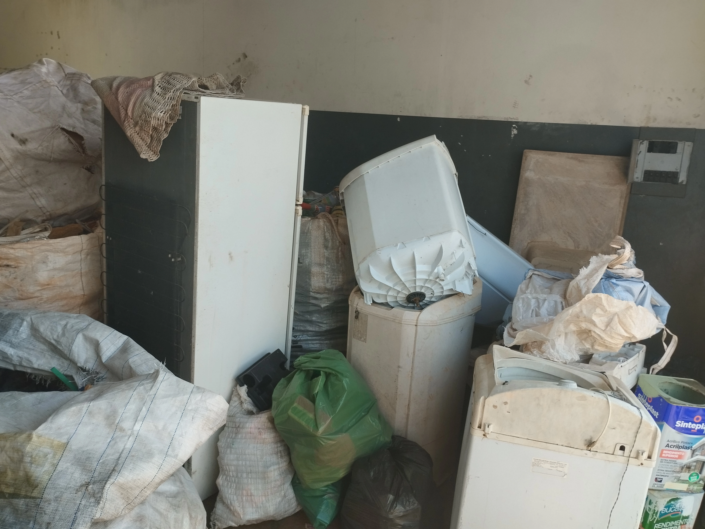
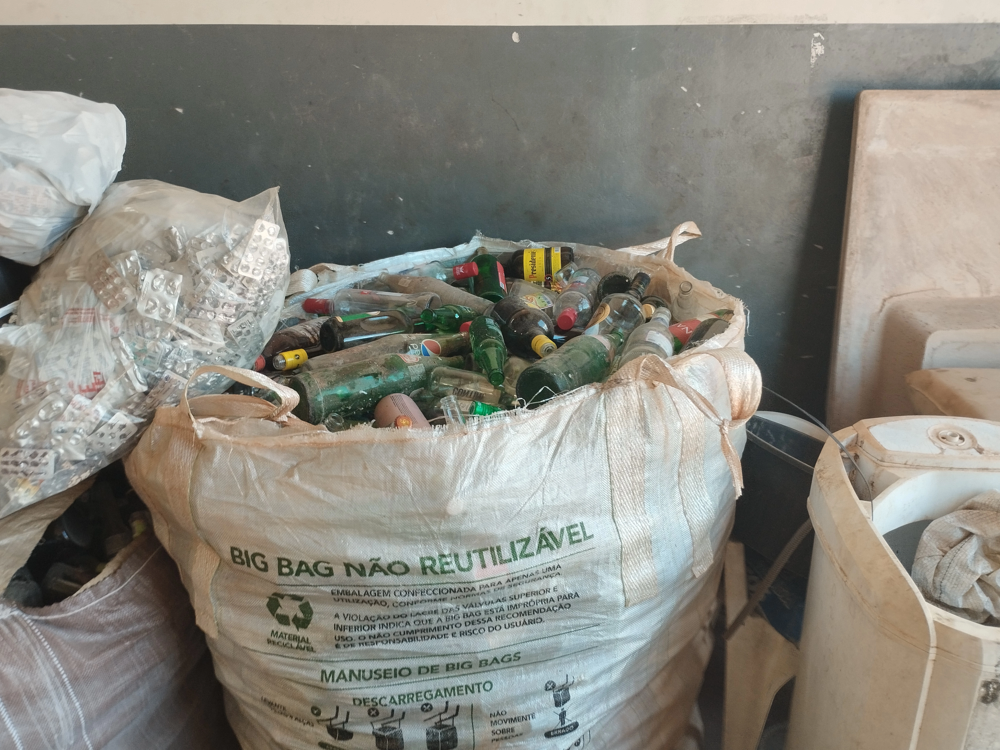
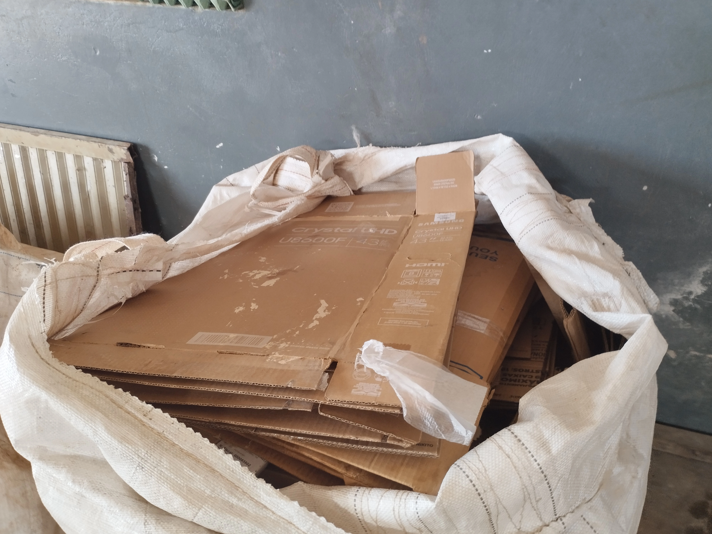
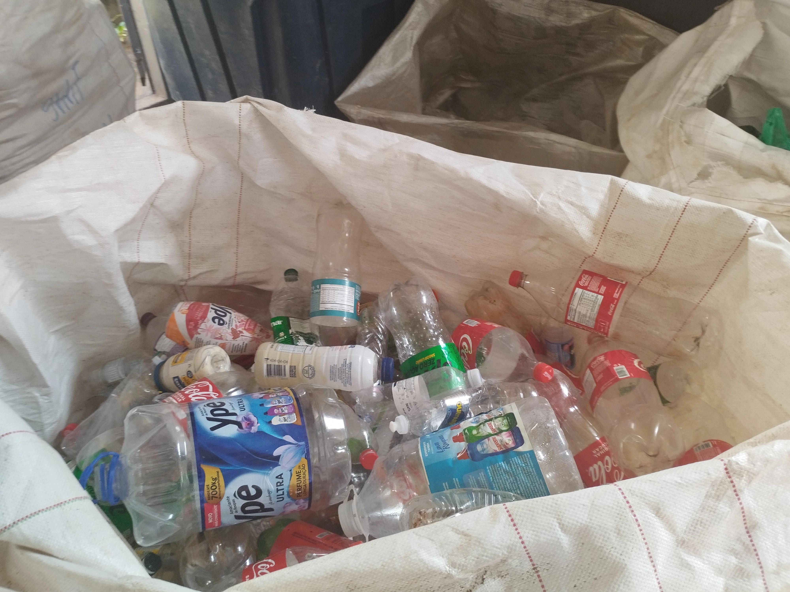
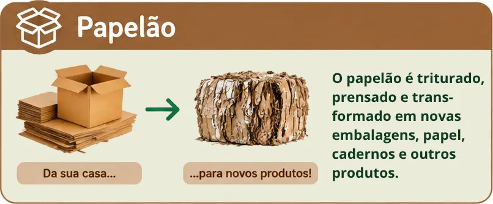
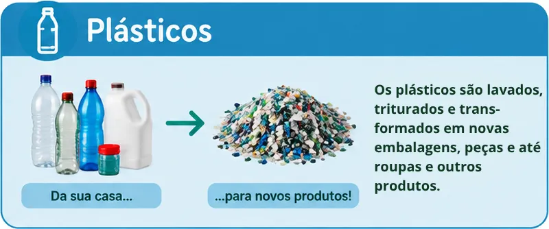
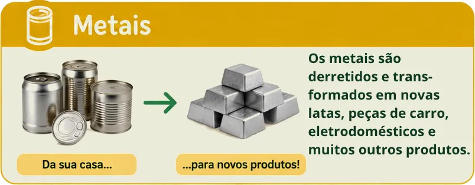
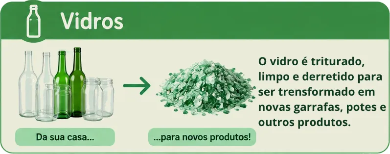
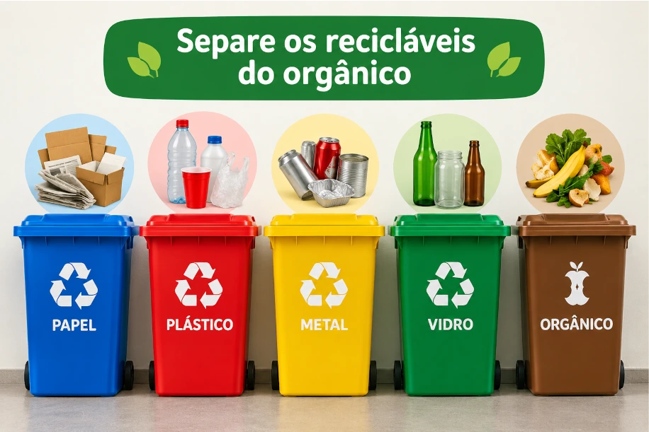

♻️ RECICLAR
É TRANSFORMAR !
Conheça o nosso trabalho e descubra como você pode colaborar.

Todos os materiais coletados são separados de a cordo com o
material

Garrafas e outros recipientes de vidro

Papelão

Garrafas pet e outros Plásticos
Separação de materiais
A separação correta ajuda a encaminhar os materiais para a reciclagem.




O que coletamos ?
📦
Papelão
🥤
Plásticos
🥫
Metais
🍾
Vidros
📺
Eletrônicos
Como eu posso
ajudar ?
